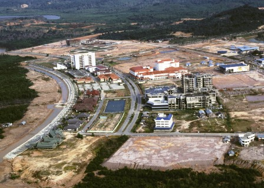
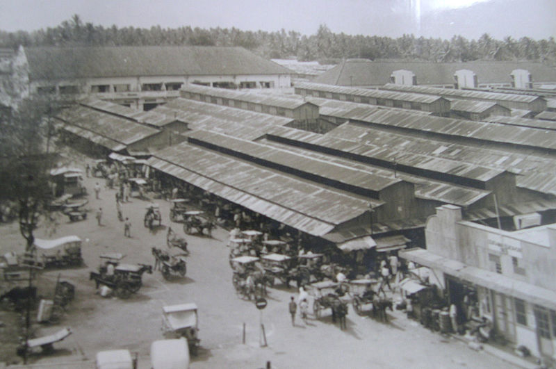

Kota Batam adalah sebuah kota yang terletak di provinsi Kepulauan Riau, Indonesia. Pada masa pra-kolonial, Batam didiami oleh suku Orang Laut, yang hidup sebagai nelayan dan pelaut. Pada abad ke-16, Batam menjadi bagian dari Kesultanan Johor-Riau yang berpusat di pulau Bintan. Pada awal abad ke-19, Batam dikuasai oleh Kesultanan Siak dan kemudian oleh Belanda pada tahun 1824. Pada masa kolonial Belanda, Batam berfungsi sebagai pelabuhan yang strategis dan pusat perdagangan. Namun, perkembangannya tidak begitu pesat karena sebagian besar perhatian pemerintah Belanda terpusat di Singapura yang berdekatan. Pada masa pendudukan Jepang selama Perang Dunia II, Batam menjadi pangkalan militer Jepang.
Setelah kemerdekaan Indonesia, Batam tetap menjadi bagian dari provinsi Riau. Namun, pada tahun 1969, pemerintah Indonesia meluncurkan kebijakan untuk mengembangkan Batam sebagai basis industri dan perdagangan. Pada tahun 1971, Batam secara resmi dinyatakan sebagai kota administratif yang terpisah dari Kabupaten Riau. Pada awalnya, perkembangan Batam tidak berjalan dengan cepat karena keterbatasan infrastruktur dan dukungan ekonomi. Pada tahun 1980-an, pemerintah Indonesia melakukan berbagai upaya untuk mendorong investasi di Batam. Hal ini termasuk peningkatan infrastruktur, pemberian insentif fiskal, dan penyederhanaan proses perizinan. Langkah-langkah ini berhasil menarik minat perusahaan multinasional untuk berinvestasi di Batam.
Pada periode pembangunan, Batam mengalami pertumbuhan ekonomi yang pesat. Banyak perusahaan elektronik, manufaktur, dan sektor jasa lainnya membangun pabrik dan fasilitas di Batam. Dukungan dari pemerintah Indonesia dan lokasinya yang strategis sebagai pintu gerbang menuju Selat Malaka membuat Batam semakin menarik bagi investor. Pada tahun 1989, pemerintah Indonesia mendeklarasikan Batam sebagai Zona Ekonomi Khusus (ZEK) dengan tujuan untuk meningkatkan pembangunan ekonomi, menciptakan lapangan kerja, dan meningkatkan pendapatan daerah. Sebagai ZEK, Batam menawarkan berbagai fasilitas dan insentif bagi perusahaan, termasuk fasilitas perpajakan yang menguntungkan dan proses perizinan yang disederhanakan. Sejak itu, Batam terus berkembang sebagai pusat industri, perdagangan, pariwisata, dan jasa. Kota ini memiliki pelabuhan internasional yang sibuk, bandara internasional yang melayani penerbangan domestik dan internasional, serta kawasan industri dan pusat perbelanjaan yang modern. Pembangunan infrastruktur seperti jalan tol, jembatan, dan jaringan listrik terus dilakukan untuk mendukung pertumbuhan kota Batam.